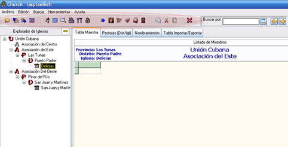
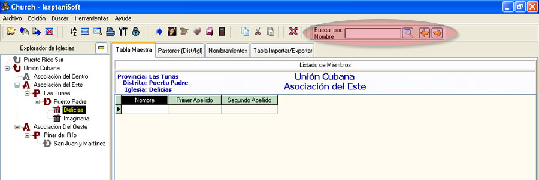
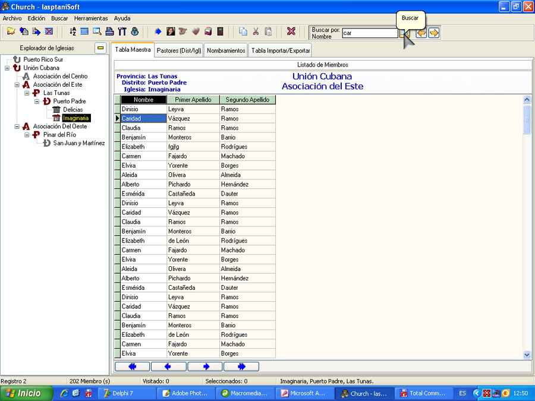
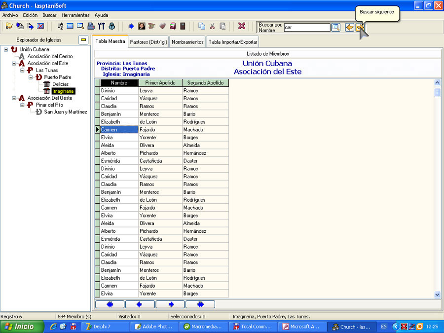

La Barra de Botones
En la barra de botones (figura 8) aparecen los botones con las acciones de uso más frecuentes.

Figura 8. La Barra de Botones.
Cuando pase el puntero del mouse sobre los botones aparecerá un mensaje con una síntesis de las accione
s que este realiza.
Al lado derecho de la Barra de Botones aparece el panel de Buscar por, solo funcionable para la Tabla Maestra, donde usted podrá introducir un término de búsqueda en dependencia al campo o columna seleccionado en la rejilla de la Tabla Maestra, esta búsqueda no es filtrada, es decir, no excluye lo no encontrado, sino que va registro por registro y se detiene en la coincidencia, ver figura 8.1. Ver además Búsquedas.

Figura 8.1. El panel de Buscar por.
Consta de una caja de texto, con tres botones de acción: Buscar, Buscar Anterior y Buscar Siguiente.
En la figura 8.2 aparece una búsqueda rápida por nombre (car), después de presionar el botón Buscar u oprimir la tecla Enter.

Figura 8.2. El panel de Buscar por (Buscar car).
Notamos como encuentra la primera coincidencia. Si oprimimos el botón Buscar siguiente, veremos el resultado en la figura 8.3.

Figura 8.3. El panel de Buscar por (Buscar car, siguiente).
El botón Buscar anterior lo lleva a la coincidencia anterior. Puede probar a su gusto.